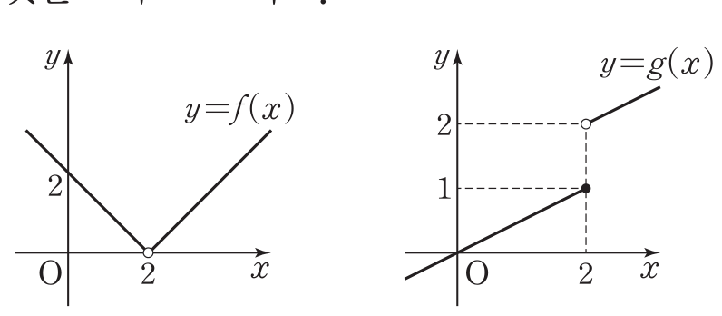

2026학년도 2학기 | 미적분 I
미적분 I 수업 학습지
단원: I-1. 함수의 극한
04차시: 중단원 마무리
01. 실전 훈련 (Textbook Mastery)
💡 비상 미적분 I 교과서 중단원 마무리 14문항을 그대로 학습지화. 문항 상단의 [Type] 태그로 사용한 개념을 인지하며 풀이. 기초 1~3 · 기본 4~12 · 도전 13·14 (서술형 킬러)
[기초-함수의 발산·극한 조사]
1. 다음을 조사하시오. (교과서 P.25 중단원 기초 01번)
(1) \( \displaystyle \lim_{x \to \infty}\left(1 + \dfrac{2}{x}\right) \)
(2) \( \displaystyle \lim_{x \to -1}\dfrac{3}{(x+1)^2} \)
🎯 풀이 전략 보기
💡 전략 힌트: (1) \(x \to \infty\)일 때 \(\dfrac{2}{x} \to 0\). (2) \(x \to -1\)에서 \((x+1)^2 \to 0^+\)이므로 \(\dfrac{3}{(x+1)^2}\)은 양의 무한대로 발산. 수렴/발산 판정을 명확히 적을 것.
[기초-구간 분기 좌·우극한]
2. 함수 \( f(x) = \begin{cases} x^2 + 1 & (x \geq 2) \\ -x^2 + 2 & (x < 2) \end{cases} \)에서 다음 극한값을 구하시오. (교과서 P.25 중단원 기초 02번)
(1) \( \displaystyle \lim_{x \to 2^+} f(x) \) (2) \( \displaystyle \lim_{x \to 2^-} f(x) \)
🎯 풀이 전략 보기
💡 전략 힌트: 우극한은 \(x \geq 2\) 식 사용 → \(2^2+1=5\). 좌극한은 \(x < 2\) 식 사용 → \(-2^2+2 = -2\). 두 값이 다르므로 극한은 존재하지 않음도 함께 명시.
[기초-극한의 사칙연산]
3. 두 함수 \(f(x), g(x)\)가 \( \displaystyle \lim_{x \to 1} f(x) = 2 \), \( \displaystyle \lim_{x \to 1} g(x) = 3 \)을 만족시킬 때, 다음 극한값을 구하시오. (교과서 P.25 중단원 기초 03번)
(1) \( \displaystyle \lim_{x \to 1}\{3f(x) + g(x)\} \) (2) \( \displaystyle \lim_{x \to 1}\{f(x) - 2g(x)\} \)
(3) \( \displaystyle \lim_{x \to 1} 2f(x)g(x) \) (4) \( \displaystyle \lim_{x \to 1}\dfrac{f(x)}{g(x)} \)
(3) \( \displaystyle \lim_{x \to 1} 2f(x)g(x) \) (4) \( \displaystyle \lim_{x \to 1}\dfrac{f(x)}{g(x)} \)
🎯 풀이 전략 보기
💡 전략 힌트: 극한의 성질 ①~⑤를 그대로 적용. 두 극한이 모두 실수이고 분모 극한값 \(3 \neq 0\)이므로 사칙연산이 모두 통과한다. 답: (1) 9 (2) -4 (3) 12 (4) \(\dfrac{2}{3}\).
[기본-절댓값 좌·우극한 조사]
4. 극한 \( \displaystyle \lim_{x \to 2}\dfrac{x^2 - 5x + 6}{|x - 2|} \)을 조사하시오. (교과서 P.26 중단원 기본 04번)
🎯 풀이 전략 보기
💡 전략 힌트: 분자 \(= (x-2)(x-3)\). \(x > 2\)일 때 \(|x-2| = x-2\) → 우극한 \(= \lim(x-3) = -1\). \(x < 2\)일 때 \(|x-2| = -(x-2)\) → 좌극한 \(= \lim[-(x-3)] = 1\). 좌·우극한이 다르므로 극한 존재하지 않음.
[기본-구간 분기 + 극한 존재 조건]
5. 함수 \( f(x) = \begin{cases} -x^2 + 4 & (x \geq 1) \\ 2x + a & (x < 1) \end{cases} \)에서 극한값 \( \displaystyle \lim_{x \to 1} f(x) \)가 존재할 때, 실수 \(a\)의 값을 구하시오. (교과서 P.26 중단원 기본 05번)
🎯 풀이 전략 보기
💡 전략 힌트: 극한이 존재하려면 좌·우극한이 같아야 한다. 우극한 \(-1 + 4 = 3\), 좌극한 \(2 \cdot 1 + a = 2 + a\). \(2 + a = 3\) → \(a = 1\).
[기본-그래프 해석 + 극한 존재 판별]
6. 두 함수 \(y = f(x), y = g(x)\)의 그래프가 다음 그림과 같을 때, <보기> 중 극한값이 존재하는 것을 모두 고르시오. (교과서 P.26 중단원 기본 06번)

<보기>
ㄱ. \( \displaystyle \lim_{x \to 2}\{f(x) + g(x)\} \)
ㄴ. \( \displaystyle \lim_{x \to 2}\{f(x) - g(x)\} \)
ㄷ. \( \displaystyle \lim_{x \to 2} f(x)g(x) \) ㄹ. \( \displaystyle \lim_{x \to 2}\dfrac{f(x)}{g(x)} \)
ㄷ. \( \displaystyle \lim_{x \to 2} f(x)g(x) \) ㄹ. \( \displaystyle \lim_{x \to 2}\dfrac{f(x)}{g(x)} \)
🎯 풀이 전략 보기
💡 전략 힌트: 그림에서 \(f(x)\)는 \(x \to 2\)에서 좌·우극한이 모두 \(0\)으로 수렴 (V형, 꼭짓점 \((2,0)\)이 빈 원). \(g(x)\)는 좌극한 \(1\), 우극한 \(2\)로 극한 없음. 사칙별로 좌·우극한을 따로 계산해, 좌극한 \(=\) 우극한인 보기만 극한값이 존재한다. 곱·몫에서 \(f\to 0\)이 결정적 역할을 한다는 점에 주목.
[기본-인수분해·유리화 종합]
7. 다음 극한값을 구하시오. (교과서 P.26 중단원 기본 07번)
(1) \( \displaystyle \lim_{x \to 2}\dfrac{x - 2}{x^2 - x - 2} \)
(2) \( \displaystyle \lim_{x \to 9}\dfrac{x - 9}{\sqrt{x} - 3} \)
(3) \( \displaystyle \lim_{x \to -2}(x+2)\left(1 - \dfrac{3}{x+2}\right) \)
🎯 풀이 전략 보기
💡 전략 힌트: (1) 분모 \( = (x-2)(x+1) \) 인수분해 후 약분 → \(\dfrac{1}{3}\). (2) 켤레 \(\sqrt{x}+3\)을 분자·분모에 곱해 유리화 → \(6\). (3) 분배해서 \((x+2) - 3\)으로 정리, \(x \to -2\) → \(-3\).
[기본-∞형/x→−∞ 변형]
8. 다음 극한값을 구하시오. (교과서 P.26 중단원 기본 08번)
(1) \( \displaystyle \lim_{x \to -\infty}\dfrac{x - 1}{|x| + 3} \)
(2) \( \displaystyle \lim_{x \to \infty}\dfrac{3x + 1}{\sqrt{x^2 + 1} - 2} \)
🎯 풀이 전략 보기
💡 전략 힌트: (1) \(x \to -\infty\)이므로 \(|x| = -x\). 분자·분모를 \(x\)로 나누면 \(\dfrac{1 - 1/x}{-1 + 3/x} \to -1\). (2) 분자·분모를 \(x\)로 나누면 \(\sqrt{x^2+1}/x = \sqrt{1 + 1/x^2}\) (\(x > 0\)이므로 양수). 극한값 → \(3\).
[기본-∞−∞ 유리화 + 미정계수]
9. \( \displaystyle \lim_{x \to \infty}\!\left(\sqrt{x^2 + ax + 4} - \sqrt{x^2 + x + 2}\right) = 5 \)일 때, 실수 \(a\)의 값을 구하시오. (교과서 P.26 중단원 기본 09번)
🎯 풀이 전략 보기
💡 전략 힌트: 켤레 \(\sqrt{x^2+ax+4} + \sqrt{x^2+x+2}\)를 곱해 유리화. 분자 \(= (a-1)x + 2\), 분모 \(\to 2x\) 수준. 극한값 \(= \dfrac{a-1}{2} = 5\) → \(a = 11\).
[기본-f(x)/x 비율 가정 활용]
10. 함수 \(f(x)\)에 대하여 \( \displaystyle \lim_{x \to \infty}\dfrac{f(x)}{x} \)의 값이 존재할 때, 극한값 \( \displaystyle \lim_{x \to \infty}\dfrac{3x^2 + 2f(x)}{x^2 - f(x)} \)를 구하시오. (교과서 P.27 중단원 도전 10번)
🎯 풀이 전략 보기
💡 전략 힌트: \( \dfrac{f(x)}{x} \to k\) (실수)로 놓자. 그러면 \( \dfrac{f(x)}{x^2} = \dfrac{1}{x} \cdot \dfrac{f(x)}{x} \to 0\). 분자·분모를 \(x^2\)으로 나누면 \( \dfrac{3 + 2 \cdot f(x)/x^2}{1 - f(x)/x^2} \to \dfrac{3 + 0}{1 - 0} = 3 \).
[기본-미정계수 결정 (분자→0)]
11. 다음 등식이 성립하도록 하는 실수 \(a, b\)의 값을 구하시오. (교과서 P.27 중단원 도전 11번)
(1) \( \displaystyle \lim_{x \to 1}\dfrac{ax^2 + bx - 1}{x - 1} = 2 \)
(2) \( \displaystyle \lim_{x \to 4}\dfrac{ax + b}{\sqrt{x+1} - \sqrt{5}} = \sqrt{5} \)
(2) \( \displaystyle \lim_{x \to 4}\dfrac{ax + b}{\sqrt{x+1} - \sqrt{5}} = \sqrt{5} \)
🎯 풀이 전략 보기
💡 전략 힌트: 두 문항 모두 분모 \(\to 0\)인데 극한값이 실수 → 분자도 \(\to 0\). (1) \(a + b - 1 = 0\) → \(b = 1 - a\). 분자를 \((x-1)(ax+1)\)로 인수분해해 약분 → \(\lim_{x \to 1}(ax+1) = a+1 = 2\) → \(a = 1,\ b = 0\). (2) 분자 \(\to 0\) → \(4a + b = 0\) → \(b = -4a\). 켤레 \(\sqrt{x+1}+\sqrt{5}\) 곱해 유리화 후 약분 → \(\lim_{x \to 4} a(\sqrt{x+1}+\sqrt{5}) = 2\sqrt{5}\,a = \sqrt{5}\) → \(a = \dfrac{1}{2},\ b = -2\).
[기본-샌드위치 정리]
12. 함수 \(f(x)\)가 모든 양의 실수 \(x\)에 대하여 \( 2x^2 - x \leq (x + 1)\,f(x) \leq 2x^2 + x \)를 만족시킬 때, 극한값 \( \displaystyle \lim_{x \to \infty}\dfrac{\{f(x)\}^2}{2x^2 - x + 1} \)을 구하시오. (교과서 P.27 중단원 도전 12번)
🎯 풀이 전략 보기
💡 전략 힌트: 부등식을 \(x(x+1)\)로 나누면 \( \dfrac{2x-1}{x+1} \leq \dfrac{f(x)}{x} \leq \dfrac{2x+1}{x+1} \). 양 끝 \(\to 2\)이므로 샌드위치로 \( \dfrac{f(x)}{x} \to 2 \). 따라서 \( \dfrac{\{f(x)\}^2}{x^2} \to 4 \), \( \dfrac{x^2}{2x^2-x+1} \to \dfrac{1}{2} \) → 답 \(2\).
[도전-기하 도형 극한 (서술형)]
13. 두 점 \( A(0, t)\ (t > 0),\ B(-1, 0) \)을 지나는 직선과 원 \(x^2 + y^2 = 1\)의 교점 중에서 \(B\)가 아닌 점을 \(P\)라 하자. 점 \(P\)에서 \(x\)축에 내린 수선의 발을 \(H\)라 할 때, 극한값 \( \displaystyle \lim_{t \to \infty}\left(\overline{OA} \cdot \overline{PH}\right) \)을 풀이 과정과 함께 구하시오. (교과서 P.27 중단원 도전 13번)

🎯 서술형 풀이 전략 보기
💡 전략: ① 직선 \(AB\): \(y = t(x+1)\). 원과 연립 → \(x^2 + t^2(x+1)^2 = 1\) → \((1+t^2)x^2 + 2t^2 x + (t^2 - 1) = 0\). \(B(-1, 0)\)가 한 근이므로 인수분해해 \(P\)의 \(x\)좌표를 \(t\)로 표현. ② \(P\left(\dfrac{1-t^2}{1+t^2},\ \dfrac{2t}{1+t^2}\right)\) → \(\overline{PH} = \dfrac{2t}{1+t^2}\). ③ \(\overline{OA} = t\) → 곱 \(= \dfrac{2t^2}{1+t^2} \to 2\) (\(t \to \infty\)).
서술 채점 포인트: 직선·원 연립, \(P\) 좌표 도출, 극한 계산 3단계 모두 명시.
서술 채점 포인트: 직선·원 연립, \(P\) 좌표 도출, 극한 계산 3단계 모두 명시.
[도전-다항함수 극한 합성 (서술형)]
14. 다항함수 \(g(x)\)에 대하여 \( \displaystyle \lim_{x \to 2}\dfrac{g(x) - x^2}{x - 2} \)의 값이 존재하고, 다항함수 \(f(x)\)가 \( f(x) + (x - 2)^2 = (x - 2)\,g(x) \)를 만족시킬 때, 극한값 \( \displaystyle \lim_{x \to 2}\dfrac{f(x)g(x)}{x^2 - 4} \)를 풀이 과정과 함께 구하시오. (교과서 P.27 중단원 도전 14번)
🎯 서술형 풀이 전략 보기
💡 전략: ① 주어진 식에서 \(x = 2\) 대입: \(f(2) + 0 = 0\) → \(f(2) = 0\). ② 양변을 \((x-2)\)로 나누면 \( \dfrac{f(x)}{x-2} + (x - 2) = g(x) \). \(x \to 2\): \( \dfrac{f(x)}{x-2} \to g(2) \). ③ \( \dfrac{g(x) - x^2}{x-2} \) 극한 존재 → 분자 \(\to 0\) → \(g(2) = 4\). 따라서 \( \dfrac{f(x)}{x-2} \to 4 \). ④ \( \dfrac{f(x)g(x)}{(x-2)(x+2)} = \dfrac{f(x)}{x-2} \cdot \dfrac{g(x)}{x+2} \to 4 \cdot \dfrac{4}{4} = 4 \).
서술 채점 포인트: \(f(2)=0\), \(g(2)=4\) 도출 근거 명시, 분리 곱 전개 한 줄 이상.
서술 채점 포인트: \(f(2)=0\), \(g(2)=4\) 도출 근거 명시, 분리 곱 전개 한 줄 이상.
02. 중단원 성찰 (Exit Ticket)
스마트폰으로 우측 QR코드를 스캔하여, 함수의 극한 단원 전체에 대한 자기점검을 작성해 제출한다.